业务组-业务-子业务说明
obj_business_conf表中管理的实体
|
实体类型 |
obj_type |
|---|---|
|
场景 |
4 |
|
因子 |
1 |
|
规则 |
3 |
|
标签 |
5 |
|
累计事件 |
6 |
|
决策理由 |
7 |
|
决策 |
8 |
|
参数 |
0 |
|
累计 |
2 |
|
多极路由场景 |
9 |
|
因子工具 |
10 |
|
智能测试任务 |
11 |
注：数据接口没有通过该表管理，默认业务群下都可以使用
业务组-业务-子业务概念说明
权限划分分为两个层级，groupKey-business（业务组-业务），business-subbusiness（父业务-子业务）
业务组-业务
该层主要规定了上表中各个实体最大的使用范围，只有在同一个groupKey下的实体才可以互相共享，比如在businessA下创建的rule1，可以共享到同一个groupKey的businessB下使用
支持共享的实体如下（在页面上就可以操作）
- 因子
- 规则
- 标签
- 累计事件
- 决策理由
- 决策
- 因子工具：不仅在obj_business_conf表中规定了哪些business可以使用，还在factor_tool表中extra_config字段细分了这其中哪些是使用业务，哪些是共享业务。样例：extra_config: [{"sharedBusinessIdList":"9","usedBusinessIdList":"9","type":2}]
- 数据接口：没有通过obj_business_conf做权限管理，而是在fetcher_app中管理
不支持共享的实体如下
- 场景：无法共享。如果想要其他业务使用，只能复制数据
- 参数：无需共享。默认同一个groupKey下面的各个business都是可见可用的
- 多极路由：不支持共享
- 智能测试任务：不支持共享
- 累计：只要创建了就不能修改所属业务，否则可能会导致读写累计的area变化，共享对应的累计因子其累计也不会被共享
共享的底层操作就是在obj_business_conf表中增加了一行数据，把一个实体配置到两个business中，比如，规则1000原来在反作弊业务（business=1）下，对应的表数据为
|
obj_type |
obj_id |
business |
|---|---|---|
|
3 |
1000 |
1 |
共享到资金安全业务（business=2）后，对应的表数据为
|
obj_type |
obj_id |
business |
|---|---|---|
|
3 |
1000 |
1 |
|
3 |
1000 |
2 |
父业务-子业务
该层主要是为了隔离不同子业务之间的权限，使得每个子业务只能看到自己的规则而不能看到其他子业务的规则。基本原则是配置在父业务中的规则在所有子业务都可见，配置在某个子业务中的规则，只在当前子业务中可见，在其他子业务中不可见，举例如下：
- 规则1属于父业务
- 规则2属于子业务1
- 规则3属于子业务2

假设A拥有父业务的权限，则A可以看到和使用所有规则（规则123）
假设B拥有子业务1的权限，则B在自己的业务中只能看到规则1和规则2
假设C拥有子业务1的权限，则C在自己的业务中只能看到规则1和规则3
这样就起到了不同子业务之间实体可见性隔离的效果。
需要说明的是，当前zeus只有规则和场景两种实体有父子业务的概念，也即上面的举例同样适用于场景，其他实体由于包含的业务逻辑不多，所以不支持，如果在其他实体中配置了子业务也不会有任何效果。